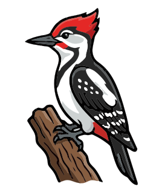

Woodpecker: Hours
The proposed pop-up schedule is Wednesday from 11 a.m. to 2 p.m. and Saturday from 10 a.m. to 1 p.m. The shorter sessions leave enough time to listen carefully, build a small solution, and test it with the person who will use it.
Because this is a concept rather than an operating business, those hours are a sample schedule, not a real appointment promise. In a real launch, the calendar would show confirmed dates, closures, and any changes before anyone makes a trip.
